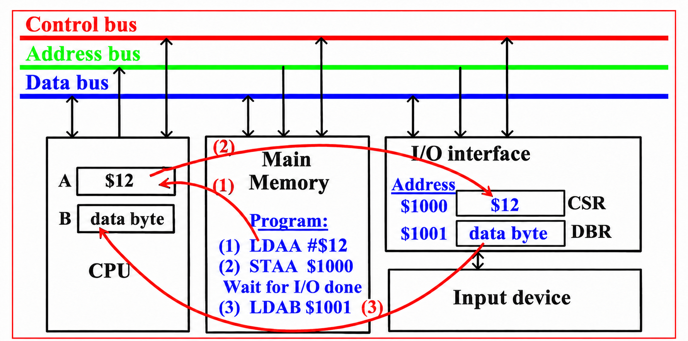
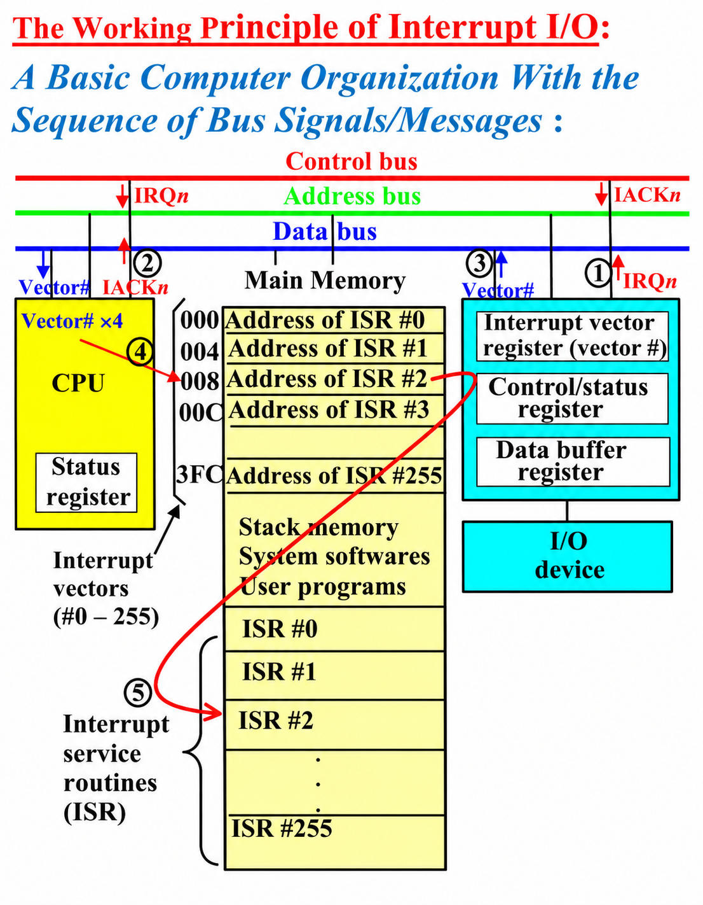

Plan your revision
Estimated chapter weights from our review of the seven December final papers, 2018–2024. These are historical topic classifications, not official allocations or predictions for a future exam.
Average final-exam weight by chapter
Chapters 2–5 account for approximately 59% overall. The recent three-paper average places more weight on Chapters 3–5 and memory hierarchy.
| Chapter / group | 2018–2024 average | 2022–2024 average | Typical questions |
|---|---|---|---|
| Ch. 1 Computer organization, performance & technology | 13.1% | 7.7% | CPU time, CPI, clock rate, power wall and dynamic power |
| Ch. 2 Basic organization, operations & I/O | 27.2% | 26.0% | Bus activity, instruction execution, memory maps, registers, interrupts and DMA |
| Ch. 3–5 ARM instructions, programs & arithmetic | 31.7% | 39.0% | Assembly programs, addressing modes, loops, procedures, signed numbers and overflow |
| Ch. 6 ARM processors | 12.1% | 14.0% | Pipelines, latency, throughput, datapath and processor features |
| Ch. 7 Memory hierarchy | 4.3% | 10.0% | Cache misses, stall cycles and perfect-cache performance |
| Ch. 8–9 Multiprocessors, cloud/GPU computing & smart applications | 11.6% | 3.3% | Computing architectures and sensor-data system design |
| Total | 100% | 100% |
Year-by-year breakdown
Each row represents 100% of the marks answered in that exam. The 2018 row uses the optional-question adjustment below.
| Paper | Ch. 1 | Ch. 2 | Ch. 3–5 | Ch. 6 | Ch. 7 | Ch. 8–9 |
|---|---|---|---|---|---|---|
| 2018 | 25% | 37.5% | 18.75% | 18.75% | 0% | 0% |
| 2019 | 17% | 17% | 22% | 8% | 0% | 36% |
| 2020 | 6% | 27% | 32% | 0% | 0% | 35% |
| 2021 | 21% | 31% | 32% | 16% | 0% | 0% |
| 2022 | 3% | 39% | 30% | 13% | 15% | 0% |
| 2023 | 8% | 8% | 54% | 26% | 4% | 0% |
| 2024 | 12% | 31% | 33% | 3% | 11% | 10% |
How the estimates were calculated
- Each question's marks are assigned once to its main assessed topic. Each exam has equal weight in the average.
- 2018 optional questions: retain the compulsory 25-mark Q1 and multiply each optional question's marks by ¾. This averages the four possible selections of three questions from Q2–Q5.
- Chapters 3–5 are grouped because instruction knowledge, program structure, signed-number representation and arithmetic overlap.
- Chapters 8–9 are grouped for parallel/cloud/GPU system-design questions in smart-application settings. Most marks in this group assess Chapter 8-type knowledge. No standalone question specifically testing the current Chapter 9's AIoT definitions or examples was identified.
- Pipeline questions are assigned to Chapter 6, cache questions to Chapter 7, and memory-address calculations to Chapter 2. A smart-car or drone setting alone does not make a question a Chapter 9 question.
- Values are rounded to one decimal place in the average table. Older papers may reflect a different syllabus emphasis.
Revision priorities and source papers
Practise Chapters 2–5 most, then cover Chapter 6 thoroughly. Master Chapter 1's recurring performance calculations and Chapter 7's cache calculations. Cover Chapters 8–9 as well: their historical weighting varies substantially.
Source papers: December ELEC2441 final examinations, 2018, 2019, 2020, 2021, 2022, 2023 and 2024, supplied by the user. This overview reproduces our earlier discussion; it is not a new independent marking audit.
Computer Organization, Performance & Technology
1.2 Memory units
LT1 · pp. 13–14Ending address of a memory block
For memory sizes in these papers, 1 MB = 220 bytes and 1 GB = 230 bytes.
Each byte has its own address. A block of N bytes begins at offset 0, so its last byte is at offset N − 1. If memory is divided equally, divide the total capacity by the number of blocks first.
1.6 Technologies for Building Processors and Memory
Lecture Note #1 · p. 24VLSI and ULSI
Integrated circuits (ICs) combine transistors on a single chip. A transistor acts as an electrically controlled ON/OFF switch. Increasing integration allows more transistors to fit on a chip.
| Term | Full name | Description in the lecture notes |
|---|---|---|
| VLSI | Very large-scale integrated circuits | The number of transistors increases from hundreds to millions (106). |
| ULSI | Ultra large-scale integrated circuits | The number of transistors per chip goes beyond millions. |
Exam reminder: use the descriptions given in this course: VLSI — hundreds to millions; ULSI — beyond millions. These describe transistor integration, not memory capacity or clock frequency.
1.7 Performance Measures
Lecture Note #1 · pp. 25–351. Terms and units
Formulas use the full descriptions from the lecture notes. CPI is the abbreviation used in the slides.
| Term | Meaning | Unit |
|---|---|---|
| Performance | Inverse of execution time | 1/s |
| Execution time | Time required to complete a task or program | s |
| CPU time | Time the CPU spends computing for the program | s |
| CPU clock cycles | Clock cycles required for the program | cycles |
| Instruction count | Number of instructions executed by the program | instructions |
| CPI | Average clock cycles per instruction | cycles/instruction |
| Clock cycle time | Time for one period of the processor clock | s/cycle |
| Clock rate | Number of clock cycles per second | Hz = cycles/s |
2. Throughput and execution time (p. 25)
Execution time is the time required to complete a task or program. Throughput is the number of tasks or instructions completed per unit time:
This equation expresses the slide's verbal definition. Throughput and the execution time of an individual task are different metrics; they are not generally reciprocals.
3. Performance and relative performance (pp. 26-27)
If X has $n$ times the performance of Y:
Rearrangements:
Example 1: $\text{Execution time}_{A}=10\ \mathrm{s}$ and $\text{Execution time}_{B}=13\ \mathrm{s}$.
A has 1.3 times the performance of B.
Example 2: $\text{Execution time}_{X}=28\ \mathrm{ms}$ and $\text{Performance}_{X}/\text{Performance}_{Y}=1.65$.
4. Components of CPU time (p. 28)
Using the accounting scope adopted in the slides:
- User CPU time: CPU time spent executing user-program instructions.
- System CPU time: CPU time spent by the OS performing work on behalf of the program.
- Child CPU time: included where the measurement scope includes child processes.
CPU time measures actual CPU work. It is not generally equal to elapsed time, which may include waiting.
5. Clock period and clock frequency (p. 28)
Slide example:
6. CPU time and total clock cycles (pp. 28-30)
Useful rearrangements:
Example 1: A runs the program in 12 s at 2 GHz.
Example 2: B requires 1.2 times A's clock cycles and must finish in 6 s.
7. CPI and the CPU performance equation (p. 31)
Unit check:
8. CPI performance comparison examples (pp. 32-34)
Example 1: Both computers execute the same instruction count $\text{Instruction count}$.
A has 1.2 times the performance of B.
Example 2: X: 236 ps, CPI 2.65. Y: 354 ps, CPI 1.87. Following the slide example, assume the same instruction count $\text{Instruction count}$. The completed calculation is:
X has approximately 1.06 times the performance of Y.
9. Comparison formulas and common pitfalls (based on pp. 31-35)
General case:
The instruction count cancels only if $\text{Instruction count}_{X}=\text{Instruction count}_{Y}$:
Performance of the fastest computer relative to the slowest:
- The same high-level program does not necessarily produce equal machine-instruction counts on different ISAs.
- Compare the complete CPU time equation, rather than CPI, frequency or instruction count alone.
- Slide p. 35: CISC may reduce instruction count but increase CPI. At the same frequency, these effects may offset each other; fewer instructions do not guarantee faster execution.
Time and frequency use decimal prefixes:
1.8 The Power Wall
Lecture Note #1 · pp. 36–37 · CPU dynamic powerCPU dynamic power
Dynamic power is the power consumed when transistors inside a CPU switch. The lecture models it as approximately proportional to capacitance, the square of CPU voltage, and CPU frequency (clock rate).
The symbols below are those used in the lecture notes.
| Lecture notation | Description |
|---|---|
| $\mathrm{Power}_{\mathrm{Dyn}}$ | Dynamic power consumed by the CPU |
| $C$ | Capacitance of each transistor inside the CPU, as described in the lecture; capacitive load in the example |
| $V$ | CPU voltage |
| $f$ | CPU frequency (clock rate) |
In words:
- Changing capacitance or frequency changes dynamic power linearly, with other factors fixed.
- Changing voltage changes dynamic power quadratically because voltage is squared.
Relative dynamic power: lecture example
Processor Y has 85% of processor X's capacitive load. Both Y's frequency and voltage are reduced by 15%, so each becomes 85% of its original value.
Answer: Y consumes approximately 52.2% of X's dynamic power, a reduction of approximately 47.8%.
Calculation reminder: a reduction of 15% means multiplying by $1-0.15=0.85$, not by 0.15. Square the voltage factor only.
What is the power wall?
Increasing clock rate raises dynamic power and heat dissipation. The practical limit on cooling microprocessors restricts further increases in clock rate: this is the power wall.
Lowering voltage helps reduce dynamic power, but practical voltage limits and transistor leakage constrain this approach. Dynamic power is one component of power consumption; the formula above does not include leakage power.
Basic Organization, Operations & I/O
2.2 RS Latches & Clocked RS Flip-Flops
Lecture Note #2 · pp. 7–82.2.1 RS flip-flop (latch): the essential idea
A latch stores one bit. Its stored state is the logic value of Q. In a valid stable state, Q′ is the complement of Q. The lecture's circuit uses two NOR gates.

- R = Reset: makes Q = 0 when S = 0.
- S = Set: makes Q = 1 when R = 0.
- Qn: previous stored state. Qn+1: next state after the circuit settles.
- Q′ is also part of the feedback that lets the circuit remember its state; it is not merely an unused extra output.
| R | S | Qn+1 | Q′n+1 | Operation |
|---|---|---|---|---|
| 0 | 0 | Qn | Q′n | Hold the previous valid state |
| 0 | 1 | 1 | 0 | Set |
| 1 | 0 | 0 | 1 | Reset |
| 1 | 1 | 0 | 0 | Avoid: outputs are not complementary |
NOR reminder: any input of 1 forces the output to 0; two inputs of 0 produce 1.
How the feedback works
The upper gate receives R and Q′ and produces Q. The lower gate receives S and Q and produces Q′. Each output feeds the opposite gate.
Here, + means OR. Feedback operates continuously: a change at one output can affect the other gate after a small propagation delay. The next-state table describes the settled result, not just one simultaneous calculation from the old outputs.
Example: reset, then hold.
- Apply R = 1, S = 0. The upper NOR gate forces Q = 0.
- The lower gate receives S = 0 and Q = 0, so Q′ becomes 1.
- Change R back to 0, leaving S = 0. The upper gate still receives Q′ = 1, keeping Q = 0.
- The lower gate still receives two zeros, keeping Q′ = 1. The bit is remembered.
2.2.2 Clocked RS flip-flop: level versus edge triggering

The AND gates control whether R and S reach the NOR latch:
- CLK = 0: both AND outputs are 0. The internal latch holds its previous valid state regardless of external R and S.
- CLK = 1: the AND gates pass R and S through. The latch responds according to the RS table above.
| Type | When can the stored state respond? | Key point |
|---|---|---|
| Level-triggered circuit shown above | Throughout the interval CLK = 1 | Changes in R or S during that interval can cause multiple output transitions. |
| Rising-edge-triggered flip-flop described in the lecture | At the clock transition from 0 to 1 | Samples the inputs at the rising edge and holds the resulting state between active edges. |
Simple comparison: with a level-triggered circuit, changing from reset to set while CLK stays high can change Q from 0 to 1. With a rising-edge-triggered flip-flop, an input change after the rising edge is acted on at the next rising edge, provided the inputs meet the required timing.
The drawn AND–NOR circuit is level-triggered. Edge triggering requires a different, more complex circuit; a clock input alone does not make a latch edge-triggered.
2.9 Three Basic I/O Mechanisms
LT2 · printed pp. 40–51The essential difference: waiting versus transferring
I/O transfers data between the computer and peripheral devices. Ask two questions: how does the CPU know the device is ready, and who moves the data?
| Method | Readiness | Data transfer | CPU involvement |
|---|---|---|---|
| Programmed I/O | CPU checks device status (polling). | CPU executes reads/writes. | Spends time checking and copying. |
| Interrupt I/O | Device sends an interrupt request. | CPU executes an ISRISR = Interrupt Service Routine: a program the CPU runs to handle an interrupt. For I/O, it transfers or processes the device data, then returns control to the interrupted program. to read/write data. | Does other work while waiting, but still copies data. |
| DMA | Device and DMA controller coordinate the transfer. | DMA controller transfers between device and memory. | Sets up the block transfer and handles completion. |
Interrupts avoid repeated polling. DMA also avoids CPU instructions for copying each item.
2.9.1 Programmed I/O — CPU checks and transfers
In the lecture's busy-wait polling model, the CPU instructs the I/O device to operate, repeatedly checks its status, and transfers the data when it is ready. The program in main memory tells the CPU what to do.

Registers in this example
| Register | Purpose |
|---|---|
| Control/Status Register (CSR), $1000 | The CPU writes commands to control I/O operation and reads status information to check readiness. |
| Data Buffer Register (DBR), $1001 | Temporarily holds the actual data being transferred between the CPU and the device. For input, the CPU reads it; for output, the CPU writes it when the interface can accept data. |
| A and B | Registers inside the CPU. Here, A holds the command; B receives the input data byte. |
CSR and DBR are I/O interface registers, not ordinary RAM. The CSR controls the interface/device's I/O operation; the DBR holds the data, not the command.
① Load the command into A: LDAA #$12
The CPU executes the instruction stored in main memory and loads the command value $12 into register A. # means an immediate value: use the value $12 itself, not the contents of address $12. At this step, the command has not yet been sent to the device.
② Send the command to the CSR: STAA $1000
The CPU stores the contents of A into the CSR at address $1000, instructing the input device to operate. In this lecture example, $12 is the input command; its meaning depends on the device/interface.
The address bus selects $1000, the data bus carries $12, and the control bus carries the write control signal. The curved red arrows show the logical transfers, not extra physical buses.
Between ② and ③: “Wait for I/O done”
The device performs the input operation and places the data byte in the DBR. Meanwhile, the CPU repeatedly reads the CSR and tests the relevant status bit until the data is ready. This is busy-waiting: CPU time is spent checking instead of running other jobs.
“Continuously checking” means repeated checks performed by program instructions, not monitoring at every instant. The program determines the checking frequency. Polling can also be periodic, but busy-waiting is the model emphasized here.
“Wait for I/O done” describes the waiting step; it is not an assembly instruction. The diagram omits the actual polling-loop instructions and the status-bit test.
③ Read the data into B: LDAB $1001
Once the data is ready, the CPU reads the contents of the DBR at $1001 into register B. The address bus selects $1001, the control bus signals a read, and the data bus carries the data byte from the interface to the CPU.
B receives the input data byte, not the address $1001 and not the command $12. This instruction transfers the data to B; storing it in main memory would require another instruction.
LDAA #$12 ; (1) load the command value into A
STAA $1000 ; (2) write the command to the CSR
; Wait for I/O done: poll CSR status until ready
; (the polling instructions are not shown in the diagram)
LDAB $1001 ; (3) read the input data from the DBR into BWhy is this also memory-mapped I/O? The CSR and DBR occupy addresses in the CPU's address space, so ordinary load/store instructions access them. Hardware selects the I/O interface rather than RAM for those addresses. Memory-mapped I/O describes how registers are addressed; polling describes how the CPU checks readiness. Interrupt I/O can also use memory-mapped registers.
2.9.2 Interrupt I/O: the complete process
Interrupt I/O allows the CPU to run other jobs without waiting for the I/O device to finish. When the device needs attention, it requests an interrupt, and the CPU executes the appropriate Interrupt Service Routine (ISR).

Before ①: start the I/O operation
The CPU instructs the I/O device to operate (read or write) by writing a bit pattern into the Control/Status Register (CSR).
The CPU then runs other jobs instead of repeatedly polling the device.
① Device activates Interrupt Request (IRQ)
When the device has finished reading a byte or word into the Data Buffer Register (DBR)—or is ready to write in an output operation—it notifies the CPU by activating the IRQ signal on the control bus.
The device is requesting the CPU’s attention.
② CPU activates Interrupt Acknowledge (IACK)
In the lecture’s model, if the device’s interrupt priority is higher than the current priority indicated by the Interrupt Mask bits of the processor status register (SR), the CPU activates IACK on the control bus.
This acknowledges that the CPU accepts the interrupt request.
③ Device sends the interrupt vector number
The device sends the interrupt vector number, stored in its Interrupt Vector Register (IVR), through the data bus to the CPU.
The CPU suspends the current job and pushes the contents of SR and PC onto the supervisor stack. These saved values allow it to resume the interrupted job later.
The vector number identifies which table entry to use. It is not the ISR’s starting address and not the input data stored in the DBR.
④ CPU finds the ISR’s starting address
The interrupt vector table is a reserved area of main memory containing the starting addresses of the ISRs.
In the LT2 diagram:
- The table starts at address $0000.
- Each entry occupies 4 bytes.
- Each entry stores the starting address of one ISR.
| Table entry location | Contents |
|---|---|
| $0000–$0003 | Starting address of ISR #0 |
| $0004–$0007 | Starting address of ISR #1 |
| $0008–$000B | Starting address of ISR #2 |
| $000C–$000F | Starting address of ISR #3 |
The CPU uses the known table starting location and the vector number:
Table entry address = Table starting address + Interrupt vector number × 4
For vector number 2:
$0000 + 2 × 4 = $0008
The CPU reads the four bytes starting at $0008. The lecture’s example gives:
| Memory address | Content |
|---|---|
| $0008 | $00 |
| $0009 | $00 |
| $000A | $01 |
| $000B | $0A |
Together, these specify the starting address of ISR #2: $0000010A.
Interrupt vector number: 2
↓ multiply by 4 and add table base
Table entry address: $0008
↓ read the entry's contents
ISR #2 starting address: $0000010A
⑤ CPU executes the ISR
The CPU jumps to the stored interrupt vector, $010A in this example, to execute the instructions of the interrupt service routine.
For an input operation, the ISR may read data from the DBR and store it in memory. It also handles the device’s interrupt condition as required.
The CPU executes the ISR’s program instructions; the vector table itself contains addresses, not those instructions.
After ⑤: return to the interrupted job
The lecture’s RTI (ReTurn from Interrupt) instruction restores the old PC address and previous value of SR from the stack.
The CPU then resumes the previously suspended job.
Does the first ISR start at address zero??
Not necessarily. In this diagram, the first table entry is stored at $0000. Its contents tell the CPU where ISR #0’s code begins. The table entry’s location and the ISR’s starting address are different things.
Does the CPU know where the table is?
Yes. The interrupt mechanism uses a known table location. LT2 assumes the table begins at zero; this is the model shown, not a universal requirement for every processor.
What is the difference between the vector number and interrupt vector?
| Term | Meaning in LT2 |
|---|---|
| Interrupt vector number | Index selecting an entry in the table; stored in the IVR |
| Table entry address | Location in main memory where the ISR’s address is stored |
| Interrupt vector | ISR starting address stored in that entry |
| ISR | Program instructions that handle the interrupt |
2.9.3 Direct Memory Access (DMA) — hardware transfers a block directly
DMA transfers a block of data directly between an I/O device and main memory. The CPU initializes the operation and checks the result; the DMA controller controls the actual block transfer. The following sequence organizes the explanation in LT2, printed pp. 49–51.
Why use DMA instead of interrupt I/O?
In interrupt I/O, the CPU is responsible for transferring each datum. The lecture considers 256 data items:
- One interrupt per datum: the CPU is interrupted 256 times, and the interrupt service routine is executed 256 times.
- One interrupt for a large buffer: even if all 256 items are ready in one interrupt session, the CPU must still read each datum from the I/O buffer and write it into memory.
LDAA io_address ; read one datum from the I/O buffer
STAA mem_address ; write that datum into memoryTherefore, 256 loads + 256 stores = 512 data-transfer instructions, before any loop or interrupt-handling overhead. Reducing the number of interrupts does not eliminate this CPU copying.
① CPU initializes the block transfer
The CPU initializes the operation of data block transfer by the DMA module at the beginning, for example a block of 256 items. In practical terms, setup tells the controller where to transfer the data, in which direction, and how much data to transfer.
② DMA controller gets hold of the buses
In the lecture's block-transfer model, the CPU is disconnected from the three buses during the block transfer. The DMA module takes control of the control, address and data buses. The CPU cannot use those same buses simultaneously.
③ DMA transfers data directly between the device and memory
The DMA controller generates the Read/Write and Address signals to transfer data directly between the I/O device and memory. It controls the transfers for the block, rather than asking the CPU to execute a load and a store for each datum.
Transfer controlled by DMA
The data does not need to pass through a CPU register for each item. The DMA controller manages the transfer; the CPU does not execute an ISR to copy every item.
④ CPU regains the buses and checks the result
After the block transfer, the CPU is reconnected to the buses. It checks the result of the operation at the end of the block transfer.
and checks result
Why is this more efficient?
The CPU normally goes through Instruction Fetch (IF), Decode (D), and Execute (EX) for each instruction. DMA avoids executing the two CPU data-transfer instructions for every datum: the controller generates the required address and read/write signals directly. This is why it is efficient for block transfers.
Key distinction: interrupt I/O avoids repeated CPU polling, but the CPU still copies the data. DMA also avoids CPU instructions for copying each item.
Signals in the lecture diagram
| Signals | Meaning |
|---|---|
| DREQ / DACK | DMA request / acknowledge between the I/O device/interface and DMA controller. |
| BR / BG | Bus request / grant between the DMA controller and CPU, allowing the controller to obtain control of the buses. |
These signals are on the control bus; the lecture draws them separately for clarity. The DMA controller and I/O interface can be combined into one hardware unit, and one DMA controller can control several devices.
Scope: this is the lecture's block-transfer model. DMA setup has a cost, so the past papers' “always faster” wording describes their stated scenarios, not every possible transfer size.
ARM Assembly Instructions
Essential notes based on LT3, pp. 5–32. Small examples and clarifications explain the lecture’s 32-bit ARM model.
3.1 Instruction set and the stored-program concept · pp. 5–6
An instruction tells the processor to perform an operation. The instruction set is the collection it understands. Assembly uses readable names such as ADD; machine code represents instructions as bits.
In a stored-program computer, both instructions and data are stored in memory as binary values. This lecture uses the 32-bit ARM model; do not mix it with a different ARM architecture.
3.2 Reading and translating instructions · pp. 7–12
ADD destination, source1, source2 adds two operands and writes the result into the first register. SUB subtracts the third operand from the second. Sources remain unchanged unless a source is also the destination.
ADD r3, r1, r2 ; r3 = r1 + r2
SUB r4, r3, r1 ; r4 = r3 - r1
MOV r1, r2 ; copy r2 into r1
ADD r1, r1, #4 ; replace r1 with its old value + 4The semicolon starts a comment. Three operands are typical for ADD/SUB, not a rule for every instruction: MOV uses two and B uses a target.
Lecture example: f = (g + h) − (i + j), with g,h,i,j in r0,r1,r2,r3 and f in r4:
ADD r5, r0, r1 ; first intermediate result
ADD r6, r2, r3 ; second intermediate result
SUB r4, r5, r6 ; final resultBreaking a complex expression into simple operations illustrates “simplicity favors regularity.” A high-level statement may require several instructions; it does not always require several.
3.3 Three operand types: register, memory and immediate · pp. 11–18
| Type | Example | Meaning |
|---|---|---|
| Register | r2 | Use the value already in r2. |
| Immediate | #4 | Use the constant 4 itself. |
| Memory | [r2,#4] | Access memory at the address r2 + 4. |
The course assumes sixteen 32-bit registers, r0–r15. The special names are r13 = SP (stack pointer), r14 = LR (link/return address), and r15 = PC (program counter). One ARM word here is 32 bits = 4 bytes.
Arithmetic normally works on registers, with an immediate where supported. To calculate using memory data: load → calculate → store. Registers are fast working storage; memory holds larger collections such as arrays.
Addresses versus values: LDR, STR and labels · pp. 9–16
Num1 DCD 100
Num2 DCD 200
LDR r0, =Num1 ; address of Num1, not its value
LDR r1, [r0] ; [r0] means memory at the address held in r0; load its value (100) into r1
LDR r2, [r0,#4]; read 200 from the next word
ADD r3, r1, r2 ; 300 (hex 0x12C)
SUB r4, r3, r1 ; 200 (hex 0xC8)
ENDDCD defines word-sized data. LDR r0, =Num1 is assembler pseudo-instruction syntax for loading the label's address. ENDIn VisUAL2, END stops simulation; it is not a standard ARM CPU instruction. Exclude END when counting executed ARM CPU instructions: ADD, SUB, END gives 2 CPU instructions. The instruction set is the collection of instruction types the CPU supports, not the number executed by a program. A simulator step counter may use different conventions. tells VisUAL2 to stop simulation; it is not a standard ARM CPU instruction. The assigned address of Num1 depends on the program layout.
What does [r0] mean? “Memory contents” means the value stored at a memory address. In LDR r1, [r0], [r0] accesses memory at the address held in r0; it is not the address of r0 itself. For example, if r0 holds 0x1000 and the word stored there is 100, the instruction loads 100 into r1.
Stored data versus an immediate constant: Num1 DCD 100 defines a word in memory initialized to 100; Num1 labels its address. To use that stored value in arithmetic, first load it into a register:
LDR r0, =Num1
LDR r1, [r0]
ADD r2, r3, r1 ; add the value loaded from Num1To add the constant 100 directly, use an immediate operand:
ADD r2, r3, #100 ; add 100 itself; no read from Num1#100 is the number itself. DCD initializes stored data; it does not by itself make that data unchangeable.
LDR r1,[r2,#20]: copy a word from memory at r2 + 20This calculates the effective address: the address held in r2 plus 20 bytes. For example, if r2 = 1000 (decimal), the CPU loads the word stored at address 1020 into r1. r1 receives the stored value, not 1020. r2 remains 1000. into r1.STR r1,[r2,#20]Yes: STR takes a source register first and a destination memory address expression second. Here, r1 supplies the value; [r2, #20] specifies memory at the address held in r2 plus 20 bytes. The instruction stores the 32-bit word from r1 there. Neither r1 nor r2 changes in this form. For comparison, LDR uses a destination register first and a source memory address expression second.: copy a word from r1 into memory at r2 + 20. The source register is not erased. These forms do not change r2.
MOV and memory access: MOV r1, r2 copies whatever value is stored in r2 into r1. It does not access memory at that value. Use LDR r1, [r2] to read the word stored at the memory address held in r2.
Register → register: MOV. Memory → register: LDR.
MOV r1, [r2] is invalid in the ARM syntax used in this course. MOV does not accept a memory source operand. Use LDR r1, [r2] to load from memory.
Arrays and byte offsets · pp. 13–16
Memory is byte-addressed: consecutive addresses differ by one byte. In this LT3 example, A is an array of computer words: each element is 32 bits = 4 bytes. LT3 pp. 11–15 and the summary on p. 31 use this word/integer model. This is not a default for every array: the element type or data declaration determines its size; DCD defines 32-bit words. Consecutive 32-bit array elementsEach element occupies 32 bits = 4 bytes. An array of n such elements occupies n × 32 bits = n × 4 bytes. For example, 10 elements occupy 320 bits = 40 bytes. therefore differ by four bytes.
With r3 holding A's base addressThe base address of array A is the starting address of its first element, A[0]. It points to the first byte of A[0], not the value stored in A[0]. Here, r3 holds this address. and r2 holding the value of the variable h, implement A[12] = h + A[8]:
LDR r5, [r3,#32] ; 8 × 4 = 32 bytes
ADD r5, r2, r5
STR r5, [r3,#48] ; 12 × 4 = 48 bytesThe offset is 32, not 8. For byte arrays multiply the index by 1; for halfword arrays multiply by 2. Follow the lecture's aligned-word model: word addresses are multiples of four.
Byte addressing/ordering: big-endian and little-endian · pp. 14–15
In general, computers are divided into 2 categories according to their byte addressing/ordering:
1) Big-endian machines
Use the address of the leftmost or “big-end” byte as the word address, i.e. the most significant byte (MSB) is stored at the lowest memory address.
The lecture gives mainframes such as IBM z/Architecture and mini-computers as big-endian examples.
Lecture example: $A1B2
| Memory Address (Hex) | Content (Hex) |
|---|---|
| $0000 | $A1 |
| $0001 | $B2 |
2) Little-endian machines
Use the address of the rightmost or “little-end” byte as the word address, i.e. the least significant byte (LSB) is stored at the lowest memory address.
The lecture classifies ARM and Intel x86 computers as little-endian.
The same lecture example: $A1B2
| Memory Address (Hex) | Content (Hex) |
|---|---|
| $0000 | $B2 |
| $0001 | $A1 |
Typographical correction: p. 15 prints “least significant byte (MSB)”; the abbreviation is corrected to LSB here.
ARM operands and instruction reference · pp. 18–20
The following reference covers every instruction and branch condition in LT3 pp. 18–21. Lecture examples and category names are retained; worked examples explain the effects. Hover over or focus an instruction to see the role of each operand. Gray underlines identify confirmed past-paper testing; hover for references.
ARM operands · p. 18
- 16 registers: r0–r12, sp, lr and pc. These are 32-bit registers providing fast storage for data. In the lecture's ARM model, memory data must be loaded into registers before arithmetic; supported immediate operands can also supply constants.
- 232 memory addresses: the lecture uses byte addresses, so each address identifies 1 byte. Sequential word starting addresses differ by 4 bytes. Memory holds data structures, arrays and spilled registers (register values temporarily saved to memory).
Operand order: arithmetic, logical instructions and MOV normally place the destination register first. STR forms instead place the source register first and the destination memory operand second. # introduces an immediate constant; brackets specify a memory access.
Arithmetic, move and logical operations · pp. 19–20
| Operation | Lecture example | Effect |
|---|---|---|
| Add | ADD r1, r2, r3r1 is the destination register. r2 and r3 supply the source values. Only the destination register receives the result. | r1 = r2 + r3. |
| Subtract | SUB r1, r2, r3r1 is the destination register. r2 and r3 supply the source values. Subtract the third operand from the second, then store the result in the first. Only the destination register receives the result. | r1 = r2 − r3; operand order matters. |
| Move | MOV r1, r2r1 is the destination; r2 is the source. MOV copies the source value. The source register stays unchanged; no memory is accessed. | Copy r2 into r1. r2 remains unchanged; no memory read at the value held in r2. |
| Bit-by-bit AND | AND r1, r2, r3r1 is the destination register. r2 and r3 supply the source values. Only the destination register receives the result. | Each result bit is 1 only if both corresponding input bits are 1. |
| Bit-by-bit OR | ORR r1, r2, r3r1 is the destination register. r2 and r3 supply the source values. Only the destination register receives the result. | Each result bit is 1 if either corresponding input bit is 1. |
| Bit-by-bit NOT | MVN r1, r2r1 is the destination; r2 is the source. MVN inverts all 32 source bits before writing the result. The source register stays unchanged; no memory is accessed. | Invert every bit of r2 and put the result in r1. |
| Logical shift left (optional operation) | LSL r1, r2, #10r1 is the destination register; r2 supplies the value to shift; #10 is the immediate shift amount in bits, not bytes. Shift left and store the result in r1. r2 remains unchanged. | Shift r2’s value left by 10 bit positions into r1; fill with zeros on the right. |
| Logical shift right (optional operation) | LSR r1, r2, #10r1 is the destination register; r2 supplies the value to shift; #10 is the immediate shift amount in bits, not bytes. Shift right and store the result in r1. r2 remains unchanged. | Shift r2’s value right by 10 bit positions into r1; fill with zeros on the left. |
Source registers remain unchanged when the destination is a different register. Logical operations apply to all 32 bits. For example, low-bit patterns 1100 AND 1010 = 1000 and 1100 OR 1010 = 1110; MVN applied to 0x0000000C gives 0xFFFFFFF3.
The table's “optional operation” wording is explained in §3.5 below: a shift can be included in another instruction's second operand. Shift amounts count bits, not bytes. Shifted-out bits are discarded; LSR does not preserve the sign of a negative value.
Data transfer: word, halfword and byte · pp. 19–20
The address tells the CPU where to start; the instruction determines how many bytes to transfer. In the lecture examples, [r2, #20] specifies the starting address held in r2 plus 20 bytes. It does not limit the access to one byte.
| Instruction / lecture example | Direction and size | What happens |
|---|---|---|
LDR r1, [r2, #20]r1 is the destination register. The source is 4 byte(s) in memory. r2 holds the base address; #20 is a constant offset of 20 bytes. The brackets specify memory starting at r2 + 20, not the address of the register itself. r2 and memory remain unchanged. | Memory → register; 4 bytes | Load a word into all 32 bits of r1. |
STR r1, [r2, #20]r1 is the source register; its low 32 bits are stored. The destination is 4 byte(s) in memory. r2 holds the base address; #20 is a constant offset of 20 bytes. The brackets specify memory starting at r2 + 20, not the address of the register itself. r1 and r2 remain unchanged. | Register → memory; 4 bytes | Store all 32 bits of r1 as a word. |
LDRH r1, [r2, #20]r1 is the destination register. The source is 2 byte(s) in memory. r2 holds the base address; #20 is a constant offset of 20 bytes. The brackets specify memory starting at r2 + 20, not the address of the register itself. r2 and memory remain unchanged. The upper bits are filled with zeros. | Memory → register; 2 bytes | Load a halfword into the low 16 bits; zero-fill the upper 16 bits. |
LDRSH r1, [r2, #20]r1 is the destination register. The source is 2 byte(s) in memory. r2 holds the base address; #20 is a constant offset of 20 bytes. The brackets specify memory starting at r2 + 20, not the address of the register itself. r2 and memory remain unchanged. The sign bit is copied into the upper bits. | Memory → register; 2 bytes | Load a signed halfword; sign-extend bit 15 through the upper 16 bits. |
STRH r1, [r2, #20]r1 is the source register; its low 16 bits are stored. The destination is 2 byte(s) in memory. r2 holds the base address; #20 is a constant offset of 20 bytes. The brackets specify memory starting at r2 + 20, not the address of the register itself. r1 and r2 remain unchanged. | Register → memory; 2 bytes | Store only the low 16 bits of r1. |
LDRB r1, [r2, #20]r1 is the destination register. The source is 1 byte(s) in memory. r2 holds the base address; #20 is a constant offset of 20 bytes. The brackets specify memory starting at r2 + 20, not the address of the register itself. r2 and memory remain unchanged. The upper bits are filled with zeros. | Memory → register; 1 byte | Load a byte into the low 8 bits; zero-fill the upper 24 bits. |
LDRSB r1, [r2, #20]r1 is the destination register. The source is 1 byte(s) in memory. r2 holds the base address; #20 is a constant offset of 20 bytes. The brackets specify memory starting at r2 + 20, not the address of the register itself. r2 and memory remain unchanged. The sign bit is copied into the upper bits. | Memory → register; 1 byte | Load a signed byte; sign-extend bit 7 through the upper 24 bits. |
STRB r1, [r2, #20]r1 is the source register; its low 8 bits are stored. The destination is 1 byte(s) in memory. r2 holds the base address; #20 is a constant offset of 20 bytes. The brackets specify memory starting at r2 + 20, not the address of the register itself. r1 and r2 remain unchanged. | Register → memory; 1 byte | Store only the low 8 bits of r1. |
These offset forms leave r2 unchanged. Loads leave memory unchanged; stores leave the source register unchanged and modify only the addressed bytes. The 32-bit register capacity does not force every load to read four bytes.
One memory slot is one byte
A word starting at 1020 occupies four separate byte locations: 1020–1023. A word-level diagram shows one row for those four bytes, labelled by the starting address. In the chart, Memory[r2+20] means the word, halfword or byte beginning there, according to the instruction.
Worked example: r2 = 1000 (decimal); the starting address is therefore 1020. Contents below are hexadecimal and use the lecture's little-endian ordering.
| Address (decimal) | Byte stored (hex) |
|---|---|
| 1020 | 34 |
| 1021 | 12 |
| 1022 | 78 |
| 1023 | 56 |
LDRB r1, [r2, #20]r1 is the destination register. The source is 1 byte(s) in memory. r2 holds the base address; #20 is a constant offset of 20 bytes. The brackets specify memory starting at r2 + 20, not the address of the register itself. r2 and memory remain unchanged. The upper bits are filled with zeros. ; reads 1020 → r1 = 0x00000034
LDRH r1, [r2, #20]r1 is the destination register. The source is 2 byte(s) in memory. r2 holds the base address; #20 is a constant offset of 20 bytes. The brackets specify memory starting at r2 + 20, not the address of the register itself. r2 and memory remain unchanged. The upper bits are filled with zeros. ; reads 1020–1021 → r1 = 0x00001234
LDR r1, [r2, #20]r1 is the destination register. The source is 4 byte(s) in memory. r2 holds the base address; #20 is a constant offset of 20 bytes. The brackets specify memory starting at r2 + 20, not the address of the register itself. r2 and memory remain unchanged. ; reads 1020–1023 → r1 = 0x56781234These are alternative loads from the same layout. LDR automatically transfers four consecutive bytes; four separate instructions are unnecessary. LDRH reads two bytes, not four bytes followed by selecting half.
Why use a halfword?
An unsigned 16-bit sensor reading needs only 2 bytes, saving space compared with a 4-byte element. Use a transfer size matching the element size.
| Element | Starting address (decimal) | Reading |
|---|---|---|
| A[0] | 1000 | 300 |
| A[1] | 1002 | 500 |
| A[2] | 1004 | 700 |
LDRH r1, [r2, #2]r1 is the destination register. The source is 2 byte(s) in memory. r2 holds the base address; #2 is a constant offset of 2 bytes. The brackets specify memory starting at r2 + 2, not the address of the register itself. r2 and memory remain unchanged. The upper bits are filled with zeros. ; r2 = 1000: read bytes 1002–1003 → r1 = 500A word load requests four bytes and is not a substitute for reading one 2-byte element. For 32-bit elements, the starting addresses instead progress 1000, 1004, 1008, …
Stores: the reverse direction, with the same transfer sizes
; Suppose r1 = 0x12345678; these are alternative stores.
STR r1, [r2]r1 is the source register; its low 32 bits are stored. The destination is 4 byte(s) in memory. r2 holds the base address. The brackets specify memory starting at r2, not the address of the register itself. r1 and r2 remain unchanged. ; store 0x12345678 in 4 bytes
STRH r1, [r2]r1 is the source register; its low 16 bits are stored. The destination is 2 byte(s) in memory. r2 holds the base address. The brackets specify memory starting at r2, not the address of the register itself. r1 and r2 remain unchanged. ; store 0x5678 in 2 bytes
STRB r1, [r2]r1 is the source register; its low 8 bits are stored. The destination is 1 byte(s) in memory. r2 holds the base address. The brackets specify memory starting at r2, not the address of the register itself. r1 and r2 remain unchanged. ; store 0x78 in 1 byter1 stays unchanged. Reading the halfword back with LDRH gives 0x00005678, not the original full word.
What does “signed” mean in LDRSH and LDRSB?
Signed data uses two's complement to represent negative as well as nonnegative integers. A signed halfword ranges from −32768 to +32767; its sign bit is bit 15. A signed byte ranges from −128 to +127; its sign bit is bit 7. A sign bit of 0 indicates a nonnegative value; 1 indicates a negative value.
Sign extension copies the sign bit into all newly added upper bits, preserving the signed numerical value in the 32-bit register. It does not read extra bytes from memory. Memory stores bit patterns; the program's interpretation determines which load to use. Registers do not acquire a permanent signed type.
| Memory pattern | Zero-extending load | Sign-extending load |
|---|---|---|
| Halfword 0x0005 (+5) | LDRH → 0x00000005 = 5 | LDRSH → 0x00000005 = 5 |
| Halfword 0xFFFE (−2 if signed) | LDRH → 0x0000FFFE = 65534 | LDRSH → 0xFFFFFFFE = −2 if signed |
| Byte 0xFE (−2 if signed) | LDRB → 0x000000FE = 254 | LDRSB → 0xFFFFFFFE = −2 if signed |
; r2 points to a halfword containing 0xFFFE
LDRH r1, [r2]r1 is the destination register. The source is 2 byte(s) in memory. r2 holds the base address. The brackets specify memory starting at r2, not the address of the register itself. r2 and memory remain unchanged. The upper bits are filled with zeros. ; upper 16 bits become 0
LDRSH r3, [r2]r3 is the destination register. The source is 2 byte(s) in memory. r2 holds the base address. The brackets specify memory starting at r2, not the address of the register itself. r2 and memory remain unchanged. The sign bit is copied into the upper bits. ; upper 16 bits become 1, copied from bit 15Spelling matters: LDRSH means load signed halfword. LDRHS instead means LDR with the HS condition (unsigned higher or same, C = 1). For unsigned halfwords (0–65535), use LDRH; for signed halfwords, use LDRSH to preserve negative values.
SWP: atomic swap · p. 20
The lecture describes SWP r1, r2, [r0]r1 receives the old memory word (destination register). r2 supplies the replacement word (source register). [r0] identifies memory that is both read and written; r0 holds its address. The original value in r1 is overwritten, not sent to memory; r2 and r0 stay unchanged. as an atomic swap between register and memory. Plain SWP transfers a 32-bit word.
r1 ← old word in Memory[r0]
Memory[r0] ← original value in r2r0 holds the address; r2 supplies the replacement; r1 receives the old memory value. With these three distinct registers, r0 and r2 remain unchanged. The previous value in r1 is overwritten; it is not sent to memory.
Example (decimal):
| Location | Before | After |
|---|---|---|
| r0 | 1000 | 1000 |
| r1 | 99 | 10 |
| r2 | 20 | 20 |
| Word starting at address 1000 | 10 | 20 |
Think: replace the memory word with r2, and keep the old word in r1. This does not exchange r1 and r2. For a literal exchange between r1 and the memory word, use SWP r1, r1, [r0]r1 receives the old memory word (destination register). r1 supplies the replacement word (source register). [r0] identifies memory that is both read and written; r0 holds its address. Because the first two operands are the same register, its original value is exchanged with the memory word.: original r1 goes to memory, and the old memory word goes to r1.
For the three-distinct-register example, the data flow resembles:
LDR r1, [r0]r1 is the destination register. The source is 4 byte(s) in memory. r0 holds the base address. The brackets specify memory starting at r0, not the address of the register itself. r0 and memory remain unchanged. ; read the old word
STR r2, [r0]r2 is the source register; its low 32 bits are stored. The destination is 4 byte(s) in memory. r0 holds the base address. The brackets specify memory starting at r0, not the address of the register itself. r2 and r0 remain unchanged. ; write the replacementAtomic means one indivisible read-modify-write operation: another processor cannot insert a competing update to that same memory location between SWP's read and write. Two separate LDR/STR instructions do not provide this guarantee. Atomic does not mean one clock cycle.
Conceptual use: a lock. Let 0 mean free and 1 mean locked. Swap 1 into the lock word, then inspect the old value returned in r1. Old value 0 means this operation acquired the lock; old value 1 means it was already locked. Atomicity prevents two contenders from both claiming a free lock. This illustrates SWP, not a complete modern synchronization implementation.
No direct SWP question or SWP entry in the supplied instruction lists was found in the 2018–2024 papers. It is not marked as tested; this does not rule out a future question.
CMP and all branch conditions · p. 21
CMP r1, r2r1 is the first value to compare; r2 is the second. CMP calculates flags as if subtracting r2 from r1. Neither is a destination register: the result is discarded and N, Z, C, V are updated. compares for a conditional branch. It sets the condition flags as if computing r1 − r2, without overwriting either operand.
N: negative result; Z: zero result; C: carry (for subtraction, 1 means no borrow); V: signed overflow. The branch checks the current flags, normally set by CMP or another flag-setting instruction. Signed comparisons use N together with V; checking N alone is insufficient when overflow occurs.
| Branch | Meaning | Flag condition | After CMP r1, r2 |
|---|---|---|---|
BEQIn BEQ Target, Target is the destination instruction label. The branch changes PC (where execution continues), not a data register. It is taken only when its flag condition is true; otherwise execution continues with the next instruction. | Equal | Z = 1 | r1 = r2 |
BNEIn BNE Target, Target is the destination instruction label. The branch changes PC (where execution continues), not a data register. It is taken only when its flag condition is true; otherwise execution continues with the next instruction. | Not equal | Z = 0 | r1 ≠ r2 |
BLTIn BLT Target, Target is the destination instruction label. The branch changes PC (where execution continues), not a data register. It is taken only when its flag condition is true; otherwise execution continues with the next instruction. | Signed less than | N ≠ V | r1 < r2 (signed) |
BLEIn BLE Target, Target is the destination instruction label. The branch changes PC (where execution continues), not a data register. It is taken only when its flag condition is true; otherwise execution continues with the next instruction. | Signed less than or equal | Z = 1 or N ≠ V | r1 ≤ r2 (signed) |
BGTIn BGT Target, Target is the destination instruction label. The branch changes PC (where execution continues), not a data register. It is taken only when its flag condition is true; otherwise execution continues with the next instruction. | Signed greater than | Z = 0 and N = V | r1 > r2 (signed) |
BGEIn BGE Target, Target is the destination instruction label. The branch changes PC (where execution continues), not a data register. It is taken only when its flag condition is true; otherwise execution continues with the next instruction. | Signed greater than or equal | N = V | r1 ≥ r2 (signed) |
BLOIn BLO Target, Target is the destination instruction label. The branch changes PC (where execution continues), not a data register. It is taken only when its flag condition is true; otherwise execution continues with the next instruction. | Unsigned lower | C = 0 | r1 < r2 (unsigned) |
BLSIn BLS Target, Target is the destination instruction label. The branch changes PC (where execution continues), not a data register. It is taken only when its flag condition is true; otherwise execution continues with the next instruction. | Unsigned lower or same | C = 0 or Z = 1 | r1 ≤ r2 (unsigned) |
BHIIn BHI Target, Target is the destination instruction label. The branch changes PC (where execution continues), not a data register. It is taken only when its flag condition is true; otherwise execution continues with the next instruction. | Unsigned higher | C = 1 and Z = 0 | r1 > r2 (unsigned) |
BHSIn BHS Target, Target is the destination instruction label. The branch changes PC (where execution continues), not a data register. It is taken only when its flag condition is true; otherwise execution continues with the next instruction. | Unsigned higher or same | C = 1 | r1 ≥ r2 (unsigned) |
BVSIn BVS Target, Target is the destination instruction label. The branch changes PC (where execution continues), not a data register. It is taken only when its flag condition is true; otherwise execution continues with the next instruction. | Overflow set | V = 1 | Signed overflow occurred |
BVCIn BVC Target, Target is the destination instruction label. The branch changes PC (where execution continues), not a data register. It is taken only when its flag condition is true; otherwise execution continues with the next instruction. | Overflow clear | V = 0 | No signed overflow |
BMIIn BMI Target, Target is the destination instruction label. The branch changes PC (where execution continues), not a data register. It is taken only when its flag condition is true; otherwise execution continues with the next instruction. | Minus | N = 1 | Subtraction result has its sign bit set |
BPLIn BPL Target, Target is the destination instruction label. The branch changes PC (where execution continues), not a data register. It is taken only when its flag condition is true; otherwise execution continues with the next instruction. | Plus | N = 0 | Subtraction result has its sign bit clear (includes zero) |
CMP r1, r2r1 is the first value to compare; r2 is the second. CMP calculates flags as if subtracting r2 from r1. Neither is a destination register: the result is discarded and N, Z, C, V are updated.
BEQ EqualCaseThe operand EqualCase is a label identifying the destination instruction. The branch changes PC (where execution continues), not a data register. It is taken only when its flag condition is true; otherwise execution continues with the next instruction. ; taken if r1 equals r2
; If not taken, execution continues with the next instruction.For example, comparing 5 with 5 sets Z = 1, so BEQ is taken and BNE is not. Choose signed or unsigned conditions according to how the values are interpreted. BMI is not a general substitute for BLT: BMI checks N, while signed less-than requires N ≠ V.
Unconditional branch and branch with link
| Lecture example | Effect |
|---|---|
B 250The operand 250 is a word displacement in this lecture example, not an absolute address. Target = current instruction address + 8 + 250 × 4. The branch changes PC (where execution continues), not a data register. It is unconditional. | Always branch to current instruction address + 8 + 250 × 4. |
BL 250The operand 250 is a word displacement in this lecture example, not an absolute address. Target = current instruction address + 8 + 250 × 4. BL also writes the return address to LR; it does not copy data to a general-purpose destination register. | Save current instruction address + 4 in r14 (LR), then branch to current instruction address + 8 + 250 × 4. Used for a procedure call. |
BL records where to return; it does not itself perform the return. The course examples use MOV pc, lrpc is the destination; lr is the source. MOV pc, lr copies the return address in LR into PC, resuming execution there. LR is unchanged. to return. Procedure and stack handling are covered in LT4 §4.2.
Lecture's numeric branch model
Target = current instruction address + 8 + (signed 24-bit word displacement × 4)
The lecture's BEQ 25The operand 25 is a word displacement in this lecture example, not an absolute address. Target = current instruction address + 8 + 25 × 4. The branch changes PC (where execution continues), not a data register. It is taken only when its flag condition is true; otherwise execution continues with the next instruction. example goes to current instruction address + 8 + 100 if Z = 1. The 25 is a word displacement in this illustration, not absolute address 25; multiply by 4 to obtain a byte offset. Likewise, B 250The operand 250 is a word displacement in this lecture example, not an absolute address. Target = current instruction address + 8 + 250 × 4. The branch changes PC (where execution continues), not a data register. It is unconditional. and BL 250The operand 250 is a word displacement in this lecture example, not an absolute address. Target = current instruction address + 8 + 250 × 4. BL also writes the return address to LR; it does not copy data to a general-purpose destination register. use a 1000-byte displacement. In source programs, labels normally let the assembler calculate the displacement.
PC convention: the lecture's numeric expressions use the current instruction address plus 8. If PC already means the architectural value (current instruction address + 8), do not add another 8. BL's return address is the next instruction, current instruction address + 4.
PC-relative branches versus memory loads
PC-relative addressing uses the Program Counter as the base. The CPU maintains PC, so the program does not need to load this base into a general-purpose register first.
LDR r1, [pc, #48]r1 is the destination register. The source is 4 byte(s) in memory. pc holds the base address; #48 is a constant offset of 48 bytes. The brackets specify memory starting at pc + 48, not the address of the register itself. pc and memory remain unchanged. ; illustrative load: memory address = value in PC + 48 bytesThis reads a word into r1; a branch instead changes where execution continues. #48 is already a byte offset; do not multiply it by 4. No direct question on this specific PC-relative load form was found in the supplied 2018–2024 papers.
Confirmed branch-formula questions: 2022 Q1(5) uses BEQ; 2024 Q1(3) uses BGT. Both are 3-mark MCQs. Prioritize the branch formula for exam preparation.
3.4 Signed and unsigned values · pp. 22–25
The same bits can represent different numbers depending on interpretation. For example, 0xFFFFFFFF is 4,294,967,295 unsigned, but −1 in two’s complement.
| 32-bit representation | Range | Zero |
|---|---|---|
| Unsigned | 0 to 2³² − 1 | One |
| Sign-and-magnitude | −(2³¹ − 1) to +(2³¹ − 1) | +0 and −0 |
| Two’s complement | −2³¹ to 2³¹ − 1 | One |
In two’s complement, the most significant bit has weight −2³¹; the remaining bits have their ordinary positive weights. It is not simply a sign attached to the remaining magnitude.
Fast decoding: if the top bit is 0, read normally. If it is 1, subtract 2³² from the unsigned value. Alternatively, invert all 32 bits and add one to obtain the magnitude, then apply a minus sign.
Lecture example: 0xFFFFFFFC → invert to 0x00000003 → add 1 → magnitude 4 → −4. To encode a negative number, invert its positive representation and add 1 within the chosen bit width.
Sign extension and overflow · pp. 25–27
Sign extension preserves a signed value when widening it: repeat its old sign bit in the new upper bits.
16-bit +12: 0x000C → 32-bit 0x0000000C
16-bit −12: 0xFFF4 → 32-bit 0xFFFFFFF4Unsigned values use zero extension instead. For a byte 0xFC, LDRB produces 0x000000FC (252), while LDRSB produces 0xFFFFFFFC (−4). These examples explain signed versus unsigned loads.
Overflow occurs when the mathematical result lies outside the chosen representation's range. For signed addition, two positives yielding a negative, or two negatives yielding a nonnegative result, indicate overflow. For subtraction, opposite-sign operands can overflow when the result's sign differs from the first operand.
Example: 0x7FFFFFFF + 1 = 0x80000000 in 32 stored bits. Mathematically +2,147,483,648 is outside the signed range; the stored result is interpreted as −2,147,483,648. Signed overflow is different from unsigned carry.
Clarification: learn the sign-extension principle from the slide's 16-bit examples; ARM immediate fields are not uniformly signed 16-bit fields across all instructions.
3.5 Logical operations and shifts · pp. 27–30
Logical operations work bit by bit, rather than treating an entire register as one Boolean value.
| Operation | Purpose | Example (low four bits shown) |
|---|---|---|
| AND | Keep bits where a mask contains 1; clear others. | 1100 AND 1010 = 1000 |
| ORR | Set bits where a mask contains 1. | 1100 OR 1010 = 1110 |
| MVN | Invert every bit of its source. | NOT 1100 = 0011 |
Actual register operations use all 32 bits. Thus MVN applied to 0x0000000C gives 0xFFFFFFF3.
LSL moves bits left and fills with zeros; LSR moves bits right and fills with zeros. Shifted-out bits are discarded. LSL by n corresponds to multiplication by 2ⁿ if no significant bits are lost. LSR corresponds to unsigned division by 2ⁿ, discarding the remainder; it does not preserve a negative signed value.
MOV r0, r0, LSL #4 ; if r0 = 6, result = 96
ADD r5, r1, r2, LSL #2 ; r5 = r1 + (r2 × 4)
MOV r6, r5, LSR #4 ; logical right shift by 4
MOV r6, r5, LSR r3 ; shift count comes from r3The shifted source value feeds the operation; its register is not separately modified. The lecture emphasizes shifts embedded in data-processing instructions. Standalone-looking LSL/LSR syntax can be assembler aliases in this ARM model.
What does “optional operation” mean?
The p. 20 chart does not explicitly define the phrase. Read it alongside p. 30: ARM offers the ability to shift the second operand as part of a data-processing instruction. In that context, interpret it as an optional shift attached to the operation, not an optional topic to study or a shift the CPU may ignore.
ADD r5, r1, r2r5 is the destination register. r1 and r2 supply the source values. Only the destination register receives the result. ; no shift
ADD r5, r1, r2, LSL #2r5 is the destination register. r1 and r2 supply the source values. LSL #2 shifts the value supplied by the third operand left by 2 bits before the operation; it does not change that source register. Only the destination register receives the result. ; r5 = r1 + (r2 << 2)With r1 = 3 and r2 = 5, the first gives 8; the second gives 3 + 5 × 4 = 23. r2 stays 5. The programmer chooses whether to include the shift; once specified, it is part of the operation.
MOV r1, r2, LSL #10r1 is the destination; r2 is the source. MOV copies the source value. The shift modifies the value being copied, not the source register. The source register stays unchanged; no memory is accessed. ; express the chart’s left-shift operation
MOV r1, r2, LSR #10r1 is the destination; r2 is the source. MOV copies the source value. The shift modifies the value being copied, not the source register. The source register stays unchanged; no memory is accessed. ; express the chart’s logical right-shift operationShift amounts are bit positions. These MOV forms express the table's LSL r1, r2, #10r1 is the destination register; r2 supplies the value to shift; #10 is the immediate shift amount in bits, not bytes. Shift left and store the result in r1. r2 remains unchanged. and LSR r1, r2, #10r1 is the destination register; r2 supplies the value to shift; #10 is the immediate shift amount in bits, not bytes. Shift right and store the result in r1. r2 remains unchanged. using the lecture's combined-operand syntax.
ARM Assembly Programs
Examples use the 32-bit ARM model in VisUAL2. A semicolon begins a comment. Original lecture slides (PDF)
4.1 · Decision making
Compare two values and choose a path · pp. 3–5
CMP r3, r4 sets the condition flags as if subtracting r4 from r3. Both registers keep their values. BEQ L1 then jumps to L1 if the values are equal (Z = 1). BNE L1 jumps if they differ (Z = 0). A label names the address of an instruction. The assembler resolves its location, so L1 can appear anywhere within branch range.
When a forward branch is taken, execution skips the intervening instructions and resumes at the label. Otherwise it continues on the next line. Plain B always jumps. Plain BL also saves a return address in LR.
Lecture example. Put the larger signed value in r5. In C, if (a > b) max = a; else max = b;. Register r3 holds a and r4 holds b.
CMP r3, r4
BLE b_max ; branch if a <= b (signed)
MOV r5, r3 ; a > b: choose a
B Exit ; skip the other assignment
b_max MOV r5, r4 ; a <= b: choose b
ExitWith 15 and 16, CMP sets N = 1, Z = 0, C = 0 and V = 0. BLE tests Z = 1 or N ≠ V. It takes the branch and r5 becomes 16. With 20 and 16, execution reaches the first MOV and r5 becomes 20. B Exit prevents the following MOV from overwriting 20. The second MOV needs no branch because Exit follows immediately. Equal inputs take the b_max path and give the common value.
Practice variation · choose the smaller signed value
CMP r3, r4
BLE putSmall
MOV r5, r4
B Exit
putSmall MOV r5, r3
ExitFor 24 and 17 the result is 17. For −2 and 1 the branch is taken and r5 receives −2. Equality also takes the branch. In each case the two inputs keep their values.
Yearly pay · translate an if–else into ARM · pp. 5–6
Try it first. Assume year, next_leap, pay, earn and bonus correspond to r0, r1, r2, r3 and r4 respectively. Write the following as a comparison and conditional branch. Place the answer in r2.
if (year == next_leap)
pay = earn + bonus;
else
pay = earn - bonus;A leap year has 366 days. Here the next leap year is supplied as an input. Even 2028 takes the unequal path if next_leap still contains 2024. This single decision compares the supplied values.
Show the lecture solution and check both paths
CMP r0, r1
BNE Else
ADD r2, r3, r4
B Exit
Else SUB r2, r3, r4
ExitFor 2022 versus 2024 the simulator gives 180 − 20 = 160. With equal years and the same earnings and bonus, pay becomes 200.
Array loop · while (a[i] == k) i++ · p. 7
Keep i in r3, k in r5 and the base address of the word array in r6. Each pass locates the current element, reads its value and decides whether to advance.
Loop ADD r12, r6, r3, LSL #2 ; r12 = address of a[i]
LDR r0, [r12, #0] ; r0 = value of a[i]
CMP r0, r5
BNE Exit ; exit when a[i] differs from k
ADD r3, r3, #1 ; i++ only on equality
B Loop
Exit| Base (decimal) | Index r3 | Shifted operand (offset) | Address r12 |
|---|---|---|---|
| 1000 | 3 | 3 << 2 = 12 bytes | 1012 |
| 1000 | 4 | 4 << 2 = 16 bytes | 1016 |
LSL shifts the value read from r3 left by two bit positions and fills the two low positions with zeros (binary 11 becomes 1100). The shifted value feeds the addition directly. The only destination of this ADD is r12. To write the shift back to r3, the instruction would need r3 as its destination. The later ADD r3, r3, #1 advances the stored index.
If a[3] equals k, the next pass checks a[4]. If a[4] differs, the loop exits with i = 4. Address 1012 holds the first byte of a[3], which occupies 1012–1015. Address 1016 begins a[4]. Adjacent byte addresses differ by one, and adjacent word starts by four. A loop with a known array length can check the index before LDR.
Changing the loop condition changes the exit branch. To continue while unequal, exit on equality with BEQ Exit.
One comparison checks both array bounds · pp. 8–9
For a 12-element array, valid indices run from 0 to 11. Let r1 hold the signed 32-bit index x and r2 hold the positive signed length y. Before loading an element, branch to your error handler if x is negative or x ≥ y.
CMP r1, r2
BHS IndexOutOfBounds ; unsigned x >= y
; valid index: array access can proceed here| Signed x | Unsigned interpretation | Action when y = 12 |
|---|---|---|
| −2 (0xFFFFFFFE) | 4,294,967,294 | Branch |
| −1 (0xFFFFFFFF) | 4,294,967,295 | Branch |
| 0 or 11 | 0 or 11 | Continue |
| 12 | 12 | Branch on equality |
Each negative index has bit 31 set. In unsigned arithmetic that bit alone contributes 2³¹, above every positive signed 32-bit length. The unsigned comparison therefore catches both negative and excessively large indices. After CMP, BHS tests C = 1 (no borrow). Keep those flags intact until the branch, and define IndexOutOfBounds at your handling code.
BHS versus BGE appeared directly in 2022 Q1(4) with −1 and 20 and 2024 Q1(1) with −3 and 24 (3 marks each). BGE uses signed ordering and would let those negative indices through.
Condition field, branch targets and conditional execution · pp. 9–13
The 4-bit Cond field selects the condition for a branch or a conditional data operation. Read comparison rows below after CMP a, b. N is the result sign bit, Z indicates zero, C indicates no borrow for this subtraction, and V indicates signed overflow.
| Hex | Suffix and meaning | Test | Hex | Suffix and meaning | Test |
|---|---|---|---|---|---|
| 0 | EQ · equal | Z = 1 | 8 | HI · unsigned higher | C = 1 and Z = 0 |
| 1 | NE · unequal | Z = 0 | 9 | LS · unsigned lower or same | C = 0 or Z = 1 |
| 2 | HS · unsigned higher or same | C = 1 | A | GE · signed greater or equal | N = V |
| 3 | LO · unsigned lower | C = 0 | B | LT · signed less | N ≠ V |
| 4 | MI · minus | N = 1 | C | GT · signed greater | Z = 0 and N = V |
| 5 | PL · plus (includes zero) | N = 0 | D | LE · signed less or equal | Z = 1 or N ≠ V |
| 6 | VS · overflow set | V = 1 | E | AL · always | Always |
| 7 | VC · overflow clear | V = 0 | F | NV · reserved in lecture table | — |
Use the signed conditions for signed integers and LO/LS/HI/HS for unsigned integers. Checking N alone can give the wrong signed ordering after overflow. A case/switch can be built from successive comparisons and conditional branches.
Where does a branch go? The ARM-state B/BL encoding has a 4-bit condition, branch opcode bits and a link bit, then a signed 24-bit displacement in words. Labels let the assembler compute the displacement. Writing r15 (PC), for example with MOV pc, lr or a load into pc, also redirects execution.
Target address = address of the branch instruction + 8 + (signed word displacement × 4). A word spans 4 bytes. From 0x1000, a displacement of +3 targets 0x1008 + 12 = 0x1014. A negative displacement branches backwards. The 32-bit PC supplies the base and the signed field reaches about 32 MiB in either direction. If given the architectural PC value, it already includes the +8.
Conditional execution · shorter version of the pay example
LT4 p. 12 revisits the yearly-pay calculation from p. 6. Compare the year (r0) with the given next leap year (r1). An equal year earns a bonus. In the other case, the slide subtracts the bonus. Earnings are in r3, the bonus is in r4, and pay goes into r2.
Version 1 · Branch to the selected calculation
CMP r0, r1 ; compare the two years
BNE Else ; different years: go to the subtraction
ADD r2, r3, r4 ; equal years: pay = earnings + bonus
B Exit ; skip the subtraction after adding
Else SUB r2, r3, r4 ; pay = earnings - bonus
ExitVersion 2 · Apply the condition to each calculation
CMP r0, r1 ; equal years set Z = 1, different years set Z = 0
ADDEQ r2, r3, r4 ; ADD if equal: execute only when Z = 1
SUBNE r2, r3, r4 ; SUB if unequal: execute only when Z = 0Which values are equal? EQ and NE test the zero flag set by CMP r0, r1. The years determine which instruction runs. The earnings and bonus supply the numbers for the arithmetic. Neither arithmetic instruction here updates the flags, so both see the same comparison and exactly one writes to r2.
To trace both paths, use earnings of 100 and a bonus of 20.
| Years compared | Branch version | Conditional version | Final pay in r2 |
|---|---|---|---|
| Equal (Z = 1) | BNE falls through to ADD. B Exit skips SUB. | ADDEQ adds. SUBNE is skipped. | 100 + 20 = 120 |
| Different (Z = 0) | BNE jumps to Else and SUB runs. | ADDEQ is skipped. SUBNE subtracts. | 100 − 20 = 80 |
With the slide’s original inputs, the years 22 and 24 differ, and both versions produce 160.
4.2 · Calling procedures
From caller to callee and back · pp. 14–16, 29–30
A procedure packages a task that can be called from another point in a program. The caller requests the work. The callee performs it. A leaf procedure makes no calls. A non-leaf procedure calls another procedure, and a recursive procedure calls itself.
| Step | What the program does |
|---|---|
| 1 · Pass parameters | Caller places the first four arguments in r0–r3. |
| 2 · Call | BL X writes the address following the call into lr (r14), then branches to X. For a call at 0x1000, the return address is 0x1004. |
| 3 · Acquire storage | Callee reserves stack space and saves registers or the incoming return address as needed. |
| 4 · Perform the task | Compute using the arguments, local values and scratch registers. |
| 5 · Deliver the result | Use r0 for the usual single-word result. The lecture also identifies r1 as a second return-value register. Restore saved registers and release local storage. |
| 6 · Return | MOV pc, lr loads the return address into r15 (PC). Execution resumes at the instruction after BL. |
| Resource | Whose responsibility? |
|---|---|
| r4–r11 · variable registers | A callee that uses one saves its incoming value and restores it before returning. The lecture uses these for additional working values. |
| r0–r3 · arguments/results, r12 · scratch | A caller that needs an old value after a call saves it beforehand. Copy the return value to a safe place before restoring an old value over it. |
| lr · return address | A nested BL overwrites lr. A non-leaf procedure saves its incoming return address before making its next call. |
| sp (r13) and caller’s stack | sp points to the top of the stack. Allocate toward lower addresses. Write within the allocated frame and preserve the caller’s older frame at higher addresses. Space below the current sp is available for later allocations. Return sp to its entry value. |
Saving registers and returning a result are explicit requirements of the 2023 yearly-salary procedure. Follow the preservation requirements stated in each question.
Leaf procedure simp_F · three saved registers · pp. 16–19
The lecture function returns (g + h) − (i + j). Arguments g, h, i and j enter in r0, r1, r2 and r3. The callee uses r4 for k and r5 and r6 for the two sums. Three saved 32-bit values require 12 bytes.
simp_F SUB sp, sp, #12
STR r6, [sp, #8]
STR r5, [sp, #4]
STR r4, [sp, #0]
ADD r5, r0, r1 ; g + h
ADD r6, r2, r3 ; i + j
SUB r4, r5, r6 ; k
MOV r0, r4 ; copy k to the return register
LDR r4, [sp, #0]
LDR r5, [sp, #4]
LDR r6, [sp, #8]
ADD sp, sp, #12
MOV pc, lrFollow the stack diagram on p. 18 with an illustrative entry sp of 0x1000. The first SUB moves sp to 0x0FF4. The old r4 occupies 0x0FF4, old r5 occupies 0x0FF8 and old r6 occupies 0x0FFC. Each LDR uses the same offset as its matching STR. Adding 12 releases this frame and returns sp to 0x1000.
In the slide’s run, r5 becomes 160 + 28 = 188 and r6 becomes 97 + 16 = 113. The answer is 75. Copying k into r0 before restoring r4 lets the caller receive 75 while also recovering its original r4.
Recursive procedure Accum · follow the stack down and back up · pp. 19–29
For positive n, Accum(1) = 1 and Accum(n) = n + Accum(n − 1). Every active call needs its own n and return address. Each call reserves two words: [sp] for n and [sp, #4] for lr.
Main MOV r0, #10
BL Accum
END
Accum SUB sp, sp, #8
STR lr, [sp, #4]
STR r0, [sp, #0]
CMP r0, #1
BGT L1
MOV r0, #1 ; base case
ADD sp, sp, #8
MOV pc, lr
L1 SUB r0, r0, #1
BL Accum ; returns Accum(n - 1) in r0
MOV r12, r0 ; keep that result while recovering n
LDR r0, [sp, #0]
LDR lr, [sp, #4]
ADD sp, sp, #8
ADD r0, r12, r0 ; Accum(n - 1) + original n
MOV pc, lrAt the base case there is no nested BL, so lr still holds the correct return address. On the recursive path BL changes lr and r0 now holds the child’s answer. Save that answer in r12, reload the parent’s n and lr, then add. r12 only has to survive until the final ADD in this call.
| Point in the slide trace | Live frames | What to look for in Registers / Memory |
|---|---|---|
| Enter Accum(10) · pp. 20–21 | 1 · 8 bytes | Save n = 10 and the return address in Main. |
| Enter Accum(9) · pp. 22–24 | 2 · 16 bytes | sp drops another 8 bytes. The newer frame saves 9 and the return point inside Accum(10). The older frame still holds 10. |
| Reach Accum(1) · pp. 25–26 | 10 · 80 bytes | The register r0 is now 1. The stack still remembers every pending addition from 2 through 10. |
| Return through 2 … 9 · pp. 26–28 | One frame released per return | The answer grows: 1 + 2 = 3, then 3 + 3 = 6. Accum(9) returns 36 + 9 = 45. |
| Return to Main · p. 29 | 0 · sp restored | Accum(10) returns 45 + 10 = 55 in r0. |
4.3 · Addressing modes
Seven ways to specify an operand or address · pp. 31–33
The slides describe twelve ARM addressing modes and focus on the following seven. An immediate, a register, or a shifted register can supply a value to arithmetic. For a load, brackets enclose the calculation of the memory address. Shifts, encoded constants (including rotated immediates) and conditional execution help express more work in fewer instructions.
| Lecture mode | Example | How to read it |
|---|---|---|
| Immediate | ADD r2, r0, #32 | Add the constant 32 to r0. |
| Register | ADD r2, r0, r1 | Add the value in r1 to r0. |
| Scaled Register | ADD r2, r0, r1, LSL #2 | Add four times the value in r1 to r0. The sum goes to r2. |
| PC-Relative | BEQ Target | When Z = 1, add the encoded displacement (in words, scaled by 4) to the architectural PC to find Target. |
| Immediate Offset | LDR r5, [r3, #32] | Load the word beginning 32 bytes beyond the address in r3. |
| Register Offset | LDR r5, [r3, r1] | r1 supplies the byte offset. Load the word at r3 + r1. |
| Scaled Register Offset | LDR r5, [r3, r1, LSL #2] | r1 supplies a word index. Scale it to bytes and load the word at r3 + 4 × r1. |
Identify the addressing mode of an instruction. For r3 = 0x1000 and r1 = 3, ADD r2, r3, r1, LSL #2 puts 0x100C in r2. With LDR r5, [r3, r1, LSL #2], the CPU uses that same 0x100C as an address and copies the word stored there into r5.
4.4 · Translating and starting a program
Follow a C file from source to execution · pp. 34–35
| Stage | Input → output | What the stage resolves |
|---|---|---|
| Compiler | x.c → x.s | Translates the high-level C program into symbolic assembly in the lecture model. |
| Assembler | x.s → x.o | Encodes instructions as machine code in an object module. References to other modules can still need resolution. |
| Linker | Object modules and libraries → executable (a.out) | Combines modules, resolves symbol references and arranges code and data. The slide shows library inputs such as y.a or y.so. |
| Loader | Executable → memory | Places or maps the program into memory and starts execution at the entry point. |
For a call to a routine defined in another object file, the assembler can record the reference in x.o. The linker connects the call to its definition. The loader then makes the executable available to the processor.
Chapter review · pp. 36–38. Trace both paths of a conditional, draw the active stack frames across a call, identify an operand’s addressing mode, and follow a reference from source code to a running program.
Coding practice
Find the index of the first different element
Given the word array below, write an ARM assembly program that starts at index 0 and finds the first element whose value differs from the first element. Leave its zero-based index in r3.
ARR DCD 12, 12, 12, -4, 12Show the annotated program
ARR DCD 12, 12, 12, -4, 12 ; Each array element occupies 4 bytes.
LDR r0, =ARR ; r0 holds the address of ARR[0].
MOV r1, #0 ; Start the index at 0, once before the loop.
LDR r2, [r0] ; Read ARR[0] once and keep it for every comparison.
Loop ADD r12, r0, r1, LSL #2 ; Address = base + index × 4. Only r12 is written.
LDR r9, [r12] ; Read the word at that address into r9.
CMP r2, r9 ; Set flags from r2 - r9. CMP r2, [r12] is invalid.
BNE out ; Different values give Z = 0. Exit before incrementing.
ADD r1, r1, #1 ; Equal values reach this line. Advance by one element.
B Loop ; Recalculate the address using the new index.
out MOV r3, r1 ; Copy the index of the first difference into r3.
END ; Marks the end of the assembly source.Trace the exit. Indices 0, 1 and 2 all contain 12. At index 3, r12 holds the address base + 12 and r9 holds the word read there, −4. Comparing 12 with −4 takes the branch while r1 is still 3, so the result is r3 = 3.
Arithmetic for Computers
Essentials from LT5, pp. 3–7. Small-width examples make the same principles used in 32-bit ARM easier to trace.
5.1 Same bits, different interpretations · pp. 3–4
The same addition/subtraction hardware handles unsigned and two’s-complement signed integers. The programmer determines how the bits are interpreted. A leading 1 does not automatically mean a negative number unless the value is being interpreted as signed.
1101
− 0100
= 1001| Interpretation (4 bits) | Calculation |
|---|---|
| Unsigned | 13 − 4 = 9 |
| Signed two’s complement | −3 − 4 = −7 |
Both interpretations give the same stored result, 1001. For n bits, the unsigned range is 0 to 2ⁿ − 1; the signed range is −2ⁿ⁻¹ to 2ⁿ⁻¹ − 1. Arithmetic stores the low n bits, so you must check whether the mathematical result fits the intended range.
Subtraction by adding the two’s complement · p. 4
A − B = A + (−B). Form −B by inverting B's bits and adding 1, keeping the chosen bit width.
Illustrative 4-bit version of the lecture's 7 − 6 example:
B = 6: 0110
Invert: 1001
Add 1 (−6): 1010
0111 (+7)
+ 1010 (−6)
------
1 0001Keep the low four bits: 0001 = 1. The carry beyond the register width is not stored in the result. A carry-out by itself does not mean signed overflow.
Signed overflow: learn all four cases · p. 5
Signed overflow means the true result cannot fit in the signed range. For addition/subtraction, the stored sign then differs from the expected sign.
| Operation | A | B | Stored result indicating overflow |
|---|---|---|---|
| A + B | ≥ 0 | ≥ 0 | < 0 |
| A + B | < 0 | < 0 | ≥ 0 |
| A − B | ≥ 0 | < 0 | < 0 |
| A − B | < 0 | ≥ 0 | ≥ 0 |
No signed overflow: adding opposite-sign operands, or subtracting same-sign operands. This statement concerns signed overflow, not unsigned carry/borrow.
4-bit examples (signed range −8 to +7):
- 7 + 3 = 10, but 0111 + 0011 stores 1010 (−6): overflow.
- −6 + (−3) = −9, but 1010 + 1101 stores 0111 (+7): overflow.
- 7 − (−1) = 8, but the stored 1000 means −8: overflow.
- −8 − 1 = −9, but the stored 0111 means +7: overflow.
The first two rows mean same-sign inputs, opposite-sign result. A negative result is not always overflow: −2 + (−3) = −5 is valid.
Carry versus overflow, and ARM checks · p. 5 + clarification
C describes unsigned carry/no-borrow; V describes signed overflow. They answer different questions about the same arithmetic.
| 4-bit addition | Stored bits | C | V |
|---|---|---|---|
| 1111 + 0001 | 0000 | 1: unsigned 15 + 1 exceeds 15 | 0: signed −1 + 1 = 0 fits |
| 0111 + 0001 | 1000 | 0: unsigned 8 fits | 1: signed 7 + 1 exceeds 7 |
The lecture gives BVS (branch when V is set) and BVC (branch when V is clear). Ensure the arithmetic actually updates flags:
ADDS r2, r0, r1 ; update flags for this addition
BVS Overflow ; branch if signed overflow occurredUse SUBS similarly for subtraction. Ordinary ADD/SUB without S do not update these flags in the lecture's ARM model; testing afterward could read old flags. This flag-update detail supplements the slide. For subtraction, C = 1 means no unsigned borrow, while C = 0 means a borrow.
SIMD: one operation on multiple data lanes · p. 5
SIMD = Single Instruction, Multiple Data. One instruction applies the same operation to several data elements in parallel, useful for pixels, graphics and audio.
The lecture illustrates a 64-bit vector organized as:
| Element width | Elements in 64 bits |
|---|---|
| 8 bits (byte) | 8 |
| 16 bits (halfword) | 4 |
| 32 bits (word) | 2 |
Illustrative four-lane addition: [1,2,3,4] + [10,20,30,40] → [11,22,33,44]. Each lane is an independent element; this is not one ordinary 64-bit integer addition with carries flowing between lanes. Available vector operations depend on the processor's extensions.
5.2 Binary multiplication: shift and add · p. 6
Read each multiplier bit. A 1 contributes a shifted copy of the multiplicand; a 0 contributes zero. Shift by the bit's position, counting from zero at the right.
Lecture example: 1001₂ × 1011₂ = 9 × 11. The multiplier has 1s at positions 0, 1 and 3:
00001001 9 × 2⁰ = 9
00010010 9 × 2¹ = 18
00000000 bit 2 is zero
01001000 9 × 2³ = 72
--------
01100011 99Thus the result is 1100011₂ = 99. Counting the number of 1s alone is insufficient: their positions determine each partial product's weight.
Sequential hardware accumulates partial products over time. More parallel hardware can combine partial products faster, at greater hardware cost.
Product width and signed multiplication · pp. 6–7
An n-bit unsigned multiplicand and an m-bit unsigned multiplier may need n + m bits for the full product. Two 4-bit operands may need eight bits: 15 × 15 = 225 = 11100001₂. Storing only four bits would lose part of that result.
For a hand calculation with signed values: find magnitudes → multiply → apply the sign → encode the result at the required width. Equal signs give a positive product; opposite signs give a negative product.
Example: (−3) × 5 = −15. In 8-bit two’s complement: +15 = 00001111 → invert to 11110000 → add 1 → 11110001.
Do not obtain a negative two’s-complement operand's magnitude by simply clearing its sign bit. Decode it correctly first. Use sufficient width, especially for the most-negative input, whose positive magnitude does not fit the same signed width.
ARM Processors
6.3 Pipelining and CPI
LT6 · pp. 5–8Pipeline filling, latency and throughput
A pipeline divides instruction processing into stages. Different instructions can occupy different stages simultaneously. ARM7 uses Instruction Fetch (IF), Instruction Decode (ID), and Datapath Execution (EX).
- Filled: every stage contains an instruction in progress.
- Latency: each instruction takes three cycles if each stage takes one cycle.
- Ideal steady-state CPI: one instruction finishes per cycle once the pipeline fills, giving CPI = 1.
- Whole-program average: includes initial filling time, so it can exceed 1. Five instructions take seven cycles in this ideal example: average CPI = 1.4.
- Single-issue: at most one instruction is issued per cycle. This is supplementary terminology for the simple model; several instructions may still be in progress.
The linked question includes our full timing example and explains why more stages or a higher clock rate do not automatically reduce CPI below 1.
Memory Hierarchy
Essentials from LT7, pp. 3–11. Gold accents identify concepts directly tested in the supplied 2018–2024 papers.
7.1 Why use a memory hierarchy? · pp. 3–5
Fast memory is expensive per bit. A hierarchy combines a small amount of fast memory near the CPU with larger, slower, cheaper storage below it.
SRAM↔Main memory
DRAM↔Secondary storage
Toward the CPU: generally faster, smaller and more expensive per bit. Away from it: generally slower, larger and cheaper per bit. The slide's 2008 prices are historical examples; understand the trade-off.
The hierarchy works because of locality: recently used information is likely to be used again (temporal locality), and nearby addresses are likely to be accessed (spatial locality). For example, a loop reuses instructions while an array traversal accesses adjacent elements. These examples explain the locality principle named in the lecture summary.
7.2 Cache blocks, hits and misses · pp. 5–8
A block or cache line is the unit transferred between adjacent memory levels. The lecture example has 16 words per block: 16 × 4 = 64 bytes.
- Hit: the requested information is found in the cache.
- Miss: it is absent; fetch the containing block from the lower level, then satisfy the request.
- Hit rate: fraction of accesses that hit.
- Miss rate = 1 − Hit rate.
- Miss penalty: extra time/cycles needed because of a miss.
An instruction cache (I-cache) holds instructions; a data cache (D-cache) holds data used by loads/stores. Every executed instruction needs an instruction fetch in the lecture's model, but only loads and stores generate the data accesses counted in its example.
7.3 Memory-stall calculations — directly tested · pp. 9–10
Directly tested: 2022 Q3(a) (15 marks), 2023 Q3(11) (4 marks), 2024 Q2(a) (11 marks). The recurring task is to count instruction and data misses separately.
With the lecture's negligible write-buffer stalls and additive miss penalties:
Equivalently: Instructions per program × Misses per instruction × Miss penalty. With separate I-cache and D-cache, use:
Why multiply only the data term by load/store frequency? If there are 100 instructions and 36% are loads/stores, count 100 instruction fetches but 36 data accesses. Do not multiply the instruction-cache term by 36%.
Miss rate is a fraction, e.g. 4% = 0.04. Miss penalty is cycles per miss. Their product with the relevant access count gives stall cycles.
CPI and perfect-cache speedup — directly tested · pp. 10–11
Directly tested: 2022 Q3(a) and 2024 Q2(a).
The CPI ratio assumes unchanged instruction count and clock cycle time. A perfect cache removes the miss stalls; it does not make execution time zero.
Lecture example: instruction miss rate 2%, data miss rate 4%, common penalty 100 cycles, loads/stores 36%, base CPI 2.
- Instruction stalls per instruction = 0.02 × 100 = 2.00.
- Data stalls per instruction = 0.36 × 0.04 × 100 = 1.44.
- Total stalls per instruction = 3.44; whole-program stalls = Instruction count × 3.44.
- CPI with stalls = 2 + 3.44 = 5.44.
- Perfect-cache speedup = 5.44 / 2 = 2.72 times.
Common traps: confusing total stalls with stalls per instruction; adding base CPI when only stalls are requested; swapping instruction/data penalties; reversing the speedup ratio. A 2.72× speedup means new time is old time / 2.72, not a 272% time reduction.
Multiprocessors, Cloud & GPU Computing
Essentials from LT8, pp. 3–8. Gold accents mark directly tested concepts in the supplied 2018–2024 papers; explanations and examples expand the short lecture notes.
8.1 Multiprocessors, multicore and clusters · pp. 3–4
Directly tested: 2024 Q3(b), 10 marks: potential uses of multiprocessors and clusters for high-performance computing. Also central to the designs in 2019 Q3(b) and 2020 Q3.
| Term | Meaning | Distinction |
|---|---|---|
| Uniprocessor | A system with one processor. | One processing resource in the lecture model. |
| Multiprocessor | A computer system with at least two processors. | Processors cooperate or run different work. |
| Multicore | Multiple processing cores on one chip. | Describes physical integration. |
| Cluster | Computers connected through a network, working together. | Separate machines coordinate to act as a larger computing system. |
A multicore machine can be one node in a cluster. A cluster can include GPU-equipped nodes. These categories can coexist.
Uses: run many independent requests, split scientific simulations or data analysis into parallel work, or maintain service despite a node failure when suitable recovery mechanisms are provided.
Two ways to benefit from parallel processing · p. 3
Job/process-level parallelism: run independent jobs simultaneously. For example, four processors each analyse a different customer's dataset. The main benefit is greater total throughput.
Parallel processing of one program: split one task into pieces that execute simultaneously. For example, divide an image into regions and process them in parallel. The goal can be a shorter completion time for that task.
These explain the potential uses requested in 2024 Q3(b). More processors do not automatically shorten a program: work must be divisible, and communication/synchronization can consume time.
Direct SIMD match: 2023 Q3(7), 4 marks (also LT5). SIMD means Single Instruction, Multiple Data: apply the same operation to several elements. Four 16-bit elements fit a 64-bit vector. GPU computing similarly benefits from suitable data-parallel workloads, but GPU execution and SIMD are not interchangeable definitions.
Scalability and availability · pp. 3–4
Direct design criteria: 2019 Q3(b) and 2020 Q3 explicitly ask about scalability and reliability, among other factors.
Scalability: how effectively performance or workload capacity increases as resources are added. Doubling processors does not guarantee double performance: sequential work, shared-memory contention, network transfers and uneven work distribution can limit the improvement.
Availability: whether the service is operational when needed. A fault-tolerant design may continue on n−1 processors after one fails. This requires appropriate software, redundancy and recovery; merely adding processors does not guarantee it.
Reliability concerns continued correct operation over time. For a design answer, explain what happens after a failure: detect it, preserve/replicate necessary data, and reassign work. Check for shared failure points such as one network switch or one storage server.
8.2 Cloud and GPU computing · pp. 5–7
Directly tested as design options: private cloud with GPU-equipped servers in 2019 Q3(b) and 2020 Q3.
Cloud computing provides computing resources through a service, commonly on demand. Users request resources without needing to manage every physical machine. A private cloud serves a particular organization and can run on its own cluster.
GPU computing uses a graphics processing unit for suitable computations beyond graphics, including parallel numerical processing, AI and data analytics. It is useful when many similar operations can run across many data elements.
Limits: transferring data, launching work and synchronizing results add overhead. A small or mostly sequential task may gain little. Not every cloud workload needs a GPU, and GPUs can also operate locally without a cloud.
Cloud describes how resources are provided; cluster describes cooperating machines; GPU describes a computing device. A private cloud can manage a cluster containing GPUs.
Design comparison: how the past papers ask it
2019 Q3(b): 36 marks; 2020 Q3: 35 marks. Both present sensor-data analytics and ask you to choose and critically evaluate a system. These are whole-question marks, not marks assigned separately to each concept.
The 2019 scenario collects measurements from 1,000 drones. The 2020 scenario monitors 2,020 locations in a smart office building at one-minute sampling intervals. Both offer centralized parallel cores, networked servers, and a private cloud with GPUs as possible designs.
| Design | Potential strength | Trade-off to discuss |
|---|---|---|
| Centralized parallel processors | Low-latency communication can suit tightly coupled tasks. | Shared resources and machine capacity can limit expansion; a central failure can affect the service. |
| Distributed cluster | Add nodes and divide independent workloads; recovery can be distributed. | Network communication and coordination overhead; redundancy must be designed. |
| Private cloud with GPU servers | Manage pooled resources and accelerate suitable parallel analytics. | GPU purchase/power and management cost; transfer overhead; specialized software. |
Evaluation checklist: cost-effectiveness, extendibility, reliability, security and scalability, plus latency for the stated workload. Tie each point to an actual design choice: encryption/access control for security, replication/failover for availability, adding nodes for expansion.
This table is revision guidance, not an official model answer. There is no universally best design: justify a choice using the task's data volume, timing requirements and degree of parallelism. A one-minute sampling interval alone does not specify every processing deadline or prove a GPU is necessary.
Essential recall and scope
- Distinguish independent jobs (throughput) from parallel pieces of one job (potentially lower latency).
- Know multiprocessor, multicore, cluster, cloud and GPU as distinct concepts.
- Explain scalability limits and what enables continued service after failure.
- For design questions, give benefits and costs, tied to the workload.
LT8's named vendor services and software versions are historical illustrations. Focus on their role in computation and analytics. No direct past-paper match was found for those specific product names, so they are not exam-highlighted.
Questions that merely mention GPU VRAM while asking for address ranges test memory addressing, not the GPU-computing ideas above.
AIoT & Smart Applications
Essentials from LT9, pp. 3–10. Illustrative examples explain the concepts.
9.1 IoT: connecting computation with physical processes · p. 3
Internet of Things (IoT) integrates computation with physical processes such as sensing, monitoring, control and coordination. Sensors measure the physical world; computing devices process the measurements; communication links let devices exchange information.
Example: temperature sensors send measurements to a building monitoring system. The system displays conditions or controls cooling.
A cyber-physical system (CPS) combines computational and physical components. LT9 discusses CPS, embedded systems, Industry 4.0 and smart systems as related concepts; these terms overlap but are not exact synonyms in every context.
Useful properties of these systems include connectivity, coordination, robustness and responsiveness: measurements must reach the right place, and the system must respond reliably.
AIoT: what AI adds · pp. 3–4
Artificial Intelligence of Things (AIoT) = AI technologies + IoT infrastructure. AI helps turn collected data into predictions, recognition or decisions, improving operation, interaction and analytics.
Sensors collect data→Computing device
AI analyses data→Prediction or decision→Alert or physical action
Illustrative distinction: reporting a motor's temperature is monitoring. Using a learned model of temperature and vibration to predict failure adds AI-based analytics. A fixed threshold alarm alone does not demonstrate machine learning.
The benefits described in LT9 are more efficient IoT operations, better human–machine interaction, and improved data management and analytics.
Edge computing versus cloud computing · p. 4
Edge computing processes data on or near the device that produces it. In the lecture's simplest AIoT example, the AI algorithm runs locally, so it does not need a remote cloud connection for that computation.
| Question | Edge | Cloud |
|---|---|---|
| Where is processing? | On a local device or nearby computer. | On remote server resources reached through a network. |
| Illustrative use | A local camera recognises an object. | A server analyses data from many cameras. |
| Practical trade-off | Can reduce communication delay and data transmission; local computing resources are limited. | Can provide larger computing resources; depends on network communication. |
The trade-offs above explain the distinction; they are not a guarantee that every edge system is faster. Edge and cloud can be combined: a device makes an immediate decision locally while a server performs broader analysis.
LT9 mentions small platforms such as Arduino, Raspberry Pi and Jetson, and optimized models such as TensorFlow Lite. Choose hardware and models that fit the available memory and processing power. Raspberry Pi and Jetson are single-board computing platforms; Arduino Uno is microcontroller-based.
9.2 Three supporting technologies · pp. 5–6
| Technology | What it contributes | Why it matters |
|---|---|---|
| Small/mobile computing devices | Local processing close to sensors and users. | Compact, affordable computing enables deployment in many places. |
| Wired/wireless networks, including Wi-Fi and 5G | Communication between sensing and computing devices. | Measurements and control information can be exchanged. |
| GPU computing and AI/ML/DL algorithms | Computational support and methods for data analysis and prediction. | Suitable workloads can benefit from parallel processing. |
Remember their roles: devices compute, networks communicate, and AI algorithms analyse. GPUs can accelerate suitable computations; a GPU by itself does not make a system intelligent, and AIoT does not always require a GPU.
9.3 Medical devices and healthcare · p. 7
LT9 describes AI/ML applications that can support diagnosis, treatment selection and risk prediction. Sensors, medical devices, records and applications provide information for analysis.
Understand the chain: patient/device data → analysis → information or predictions that support clinical decisions. The intended benefits include better productivity and fewer errors; the lecture presents potential benefits, not a guarantee of correct diagnosis.
For revision, focus on the input data, the role of AI and the intended benefit rather than memorizing historical regulatory dates.
Smart grids: use forecasts to manage energy · pp. 8–9
A smart grid uses sensing, communication and computing to monitor and manage an energy system. AIoT adds analytics and forecasts that can inform control decisions.
LT9's ASGARD port example describes a Smart Grid Management System that uses forecasts/data analytics for real-time optimization and gives operators timely monitoring information.
The other example combines solar generation, energy storage and electric-vehicle charging with analytics software. The essential idea is coordinating energy resources using measured data and predictions, rather than treating each resource independently.
Essential recall · p. 10
- IoT: computation connected with physical sensing, monitoring and control.
- AIoT: AI combined with IoT to improve analysis, predictions and operation.
- Edge: computation close to the data source; cloud processing is not compulsory for every task.
- Enablers: small computing devices, communication networks, and AI/ML methods with suitable computing hardware.
- Explain an application: identify its data source, processing, output/action and benefit.
- Lecture examples: medical devices and smart grids. Other mentioned areas include autonomous vehicles, precision agriculture, predictive maintenance and smart retail.
LTN1 · Lecture 1
Open PDF in a new tab · Download PDF
If the PDF viewer is unavailable on your device, use the open or download link above.
LTN2 · Lecture 2
Open PDF in a new tab · Download PDF
If the PDF viewer is unavailable on your device, use the open or download link above.
LTN3 · Lecture 3
Open PDF in a new tab · Download PDF
If the PDF viewer is unavailable on your device, use the open or download link above.
LTN4 · Lecture 4
Open PDF in a new tab · Download PDF
If the PDF viewer is unavailable on your device, use the open or download link above.
LTN5 · Lecture 5
Open PDF in a new tab · Download PDF
If the PDF viewer is unavailable on your device, use the open or download link above.
LTN6 · Lecture 6
Open PDF in a new tab · Download PDF
If the PDF viewer is unavailable on your device, use the open or download link above.
LTN7 · Lecture 7
Open PDF in a new tab · Download PDF
If the PDF viewer is unavailable on your device, use the open or download link above.
LTN8 · Lecture 8
Open PDF in a new tab · Download PDF
If the PDF viewer is unavailable on your device, use the open or download link above.
LTN9 · Lecture 9
Open PDF in a new tab · Download PDF
If the PDF viewer is unavailable on your device, use the open or download link above.